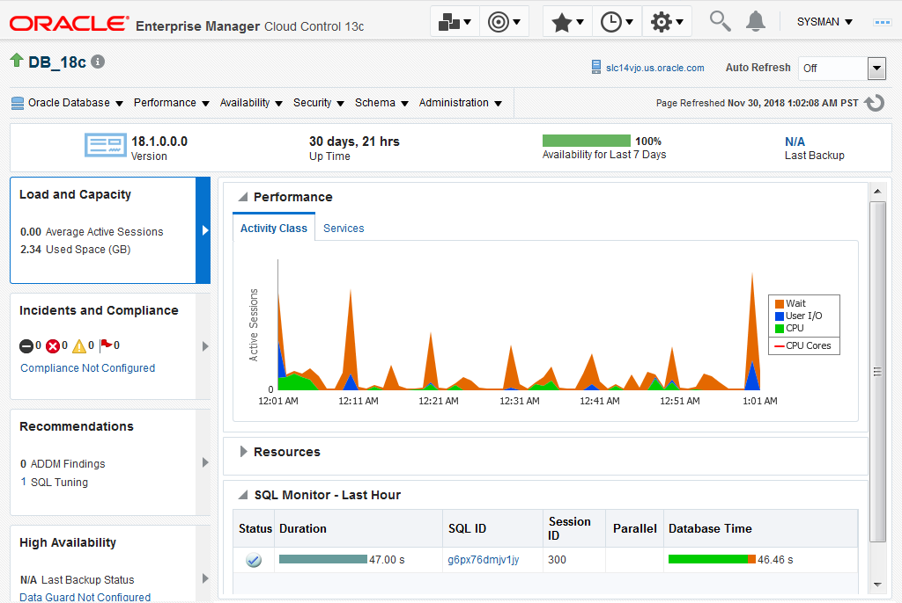
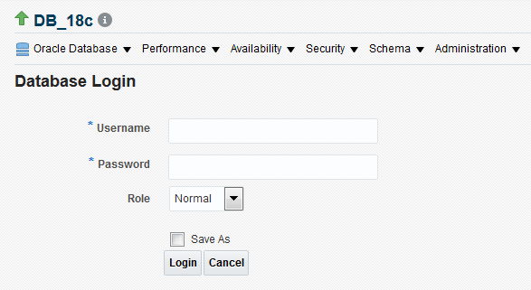

This 15-minute tutorial shows you how to configure an Oracle
database instance in Oracle Enterprise Manager Cloud Control
(Cloud Control).
Background
The primary tool to manage an Oracle database is Cloud Control, which is a
web-based interface. Using Cloud Control, you can perform the following
administrative tasks for an Oracle database:
Change and configuration management
Patching and upgrades
Provisioning
Testing
Performance management
Automatic tuning
In addition, Cloud Control provides an interface for various database utilities, such as SQL*Loader and Recovery Manager (RMAN).
What Do You Need?
You must have the following software before you run this
tutorial:
Oracle Enterprise Manager Cloud Control (Cloud Control) 13c
Release 3
Oracle Database 18c Enterprise Edition
Configure
a Database Instance in Cloud Control
Start Cloud Control using the URL having the following
syntax:
Click on the name of the database instance that you have
configured. For example, DB_18c.
The home page for the selected database instance is displayed.

Description
of the illustration database_instance_home_page.png
You can now perform various database administration tasks for
this database instance by selecting the appropriate menus on this page.
Note: The first time that you select an
option from some of the menus in the database instance home
page, such as the Performance menu, the Database
Login page is displayed.

Description
of the illustration database_login_page.png
Log in as a user with the appropriate privileges. For example,
to log in as the SYS user with the SYSDBAprivileges, enter the following information and then click Login:
 Configure
a Database Instance in Cloud Control
Configure
a Database Instance in Cloud Control Before You Begin
Before You Begin Configure
a Database Instance in Cloud Control
Configure
a Database Instance in Cloud Control Open
the Database Instance Home Page in Cloud Control
Open
the Database Instance Home Page in Cloud Control